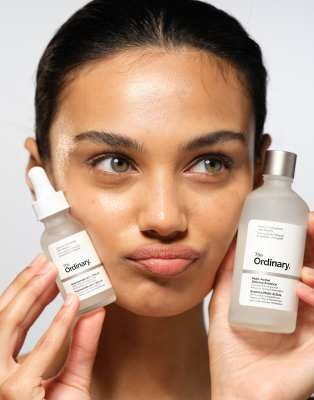
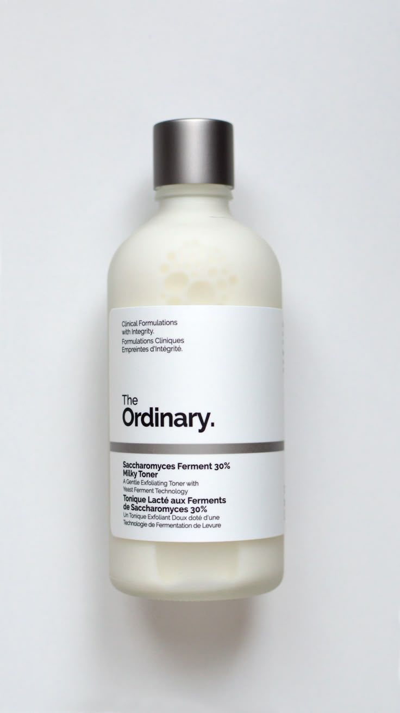
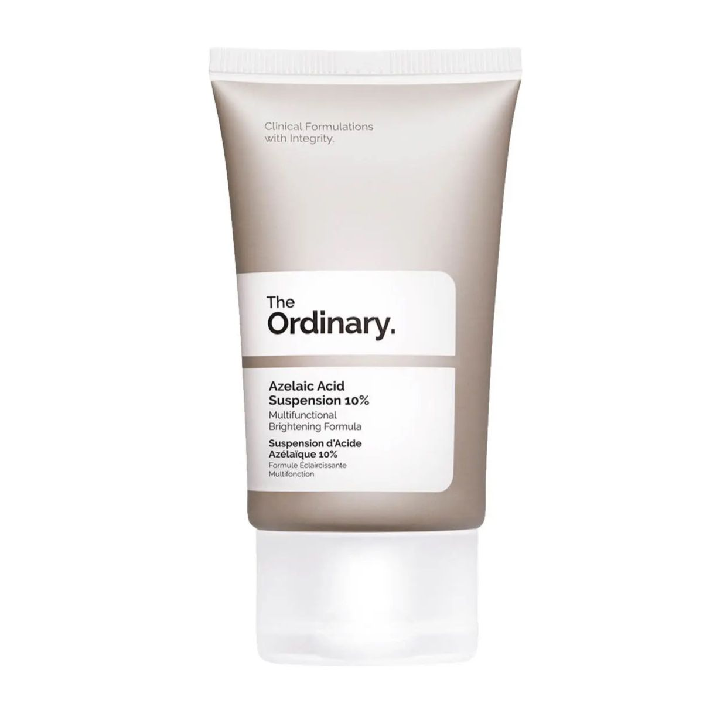
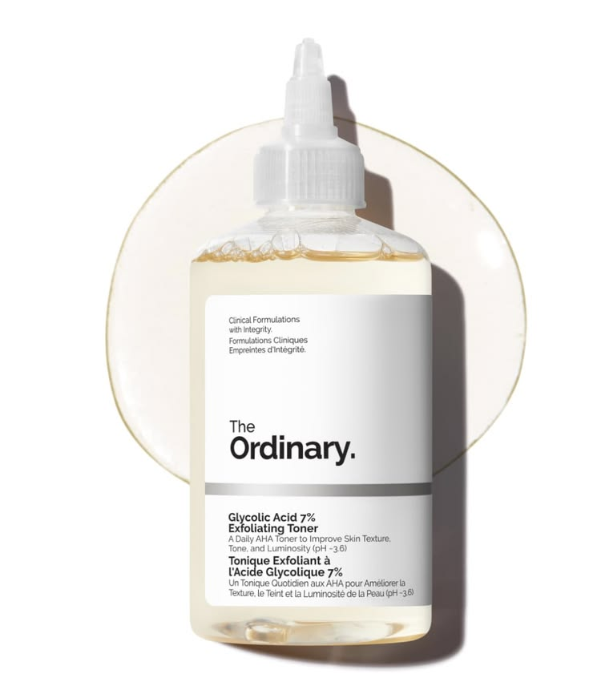
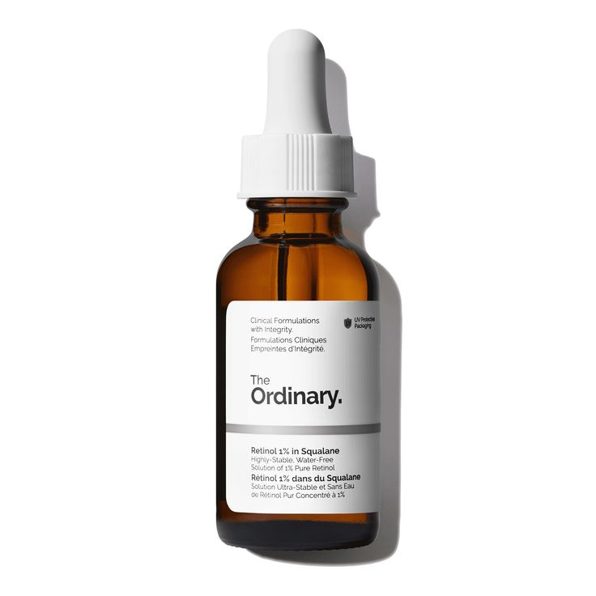
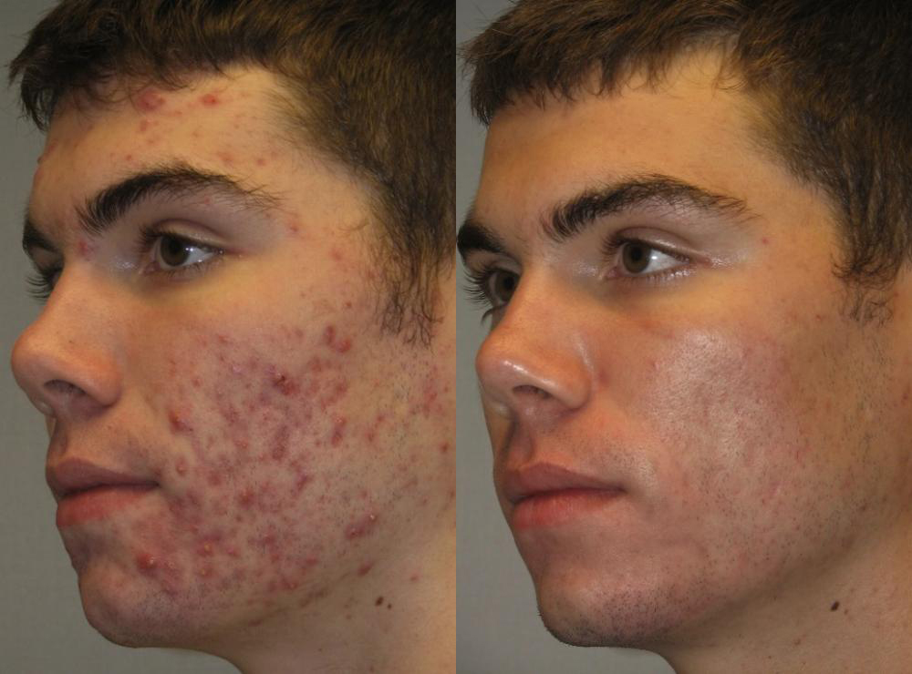
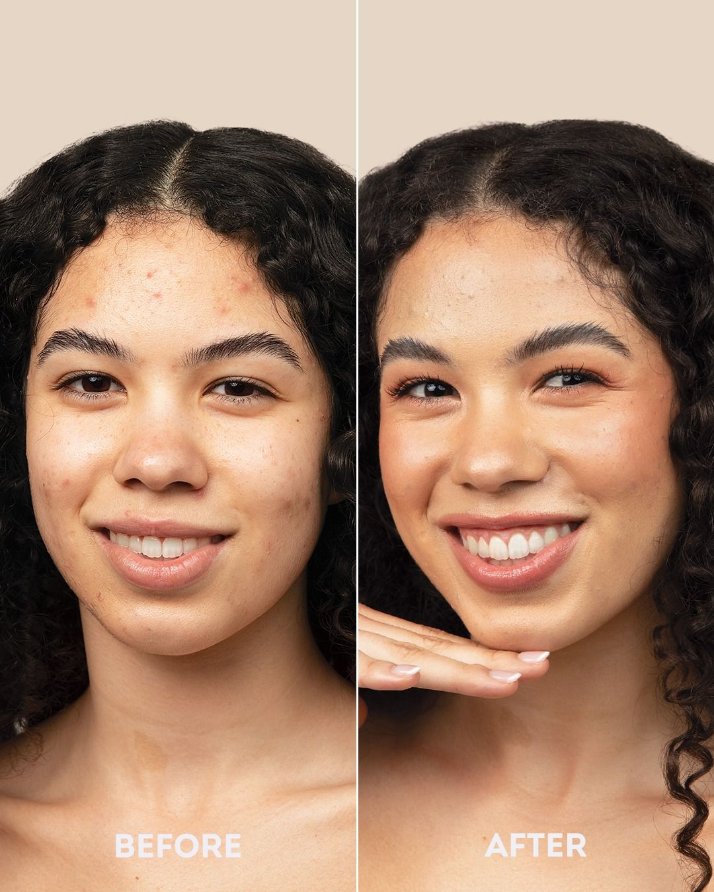

We focus on what matters the most , clean and dermatologically tested formulas that not only support your skin but also gives it that nourishment and hydration that your skin has been crying out for using only gentle ingredients ,no trends no hype . Don't believe us? See for yourself.






10 / 10 product

This product is so gentle and it booste my confidence by 10000%
Affordability: High-quality ingredients are provided at a low cost compared to luxury brands, reducing the markup on raw ingredients.
Targeted Efficacy:Products focus on specific skin concerns (e.g., congestion, fine lines, dryness) using proven ingredients like retinol, hyaluronic acid, and niacinamide.
Minimalist Formulas: By using fewer ingredients per product, users can tailor their routines to precisely what their skin needs, minimizing potential irritation from unnecessary additives.
High Performance: Clinical formulations demonstrate strong results, such as improving skin texture, boosting hydration by 86%, and supporting the skin barrier.
Transparency: The brand clearly labels active ingredients and percentages, educating consumers on what they are using.
Vegan & Cruelty-Free: Most products are formulated without parabens, sulfates, or animal testing